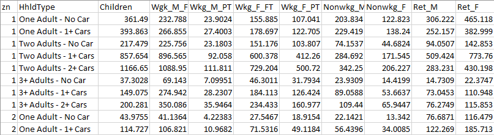
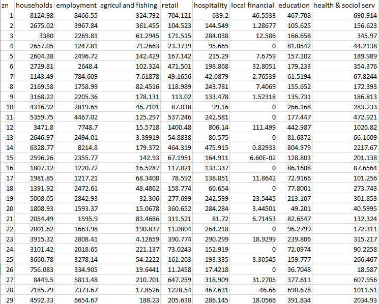
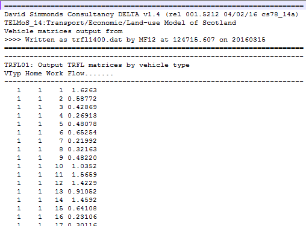

Methodology¶
Overview¶
The Trip End Model is an incremental model which pivots from files prepared as part of the TMfS18 base year model. Therefore, the relevant base year files must be accessible to operate the Trip End Model before a new run of the Trip End Model can be undertaken.
Using this methodology, the trip end model acts entirely as a ratio model. Growth rates for each modelled zone are calculated using a combination of changes in planning data (number of households, population and employment forecast over time) and a series of trip rates. These rates of growth are then applied to TMfS base year trip ends to create forecast year trip ends.
Data Sources¶
The Trip End Model uses data from five main sources, namely:
- Trip rate data from the UK Department for Transport (DfT) National Trip End Model (NTEM);
- Output planning data from the Transport Economic Land-Use Model Of Scotland (TELMoS);
- DfT Road Traffic Forecasts (RTF);
- Rail growth factors, currently derived from TELMoS GVA forecasts; and
- Airport growth data, for example from DfT aviation forecasts.
The use of these data sources in the trip end model are discussed in the following sections.
National Trip End Model (NTEM)¶
The trip rates provided within the National Trip End Model (NTEM) form an integral part of the DfT's National Transport Model (NTM) and TEMPRO. There are three main components of the NTEM model, which have been incorporated into the TMfS model, including:
- Household car ownership forecasting;
- A demographic model which allocates household and person type planning data to a system of 88 person-type categories; and
- Calculation of trip ends by applying trip rates to the number of persons in each of the 88 person-type categories
The NTEM trip rate structure is disaggregate and they are applied on a zonal basis at the person trip making level within the trip end model. These NTEM trip rates are also used within the TMfS Trip End Model.
The NTEM person type categories are split into a matrix of eleven person types and eight household types generating 88 categories in total.
The eleven person types are:
- Children (0 to 15);
- males in full time employment (16 to 74);
- males in part time employment (16 to 74);
- male students (16 to 74);
- male not employed / students (16 to 74) - unemployed plus other inactive;
- male 75+;
- females in full time employment (16 to 74);
- females in part time employment (16 to 74);
- female students (16 to 74);
- female not employed / students (16 to 74) - unemployed plus other inactive; and
- female 75+.
The eight household types are:
- 1 adult household with no access to a Car;
- 1 adult household with access to one or more Cars;
- 2 adult households with no access to a Car;
- 2 adult households with access to one Car;
- 2 adult households with access to two or more Cars;
- 3+ adult households with no access to a Car;
- 3+ adult households with access to one Car; and
- 3+ adult households with access to two or more Cars.
The specific travel modes included in NTEM are:
- Walk;
- Cycle;
- Car driver;
- Car passenger;
- Bus; and
- Rail (including underground).
Note that the walk and cycle modes are not included within the TMfS18 Trip End Model.
Production trip rates for these 88 categories are obtained from the NTEM
using the input databases to the CTRIPEND software1. The IBETAhsr
table was used to provide the weekly trip rates by purpose, traveller
type and area type. The table IRHOmdhsr was used to split these trip
rates by time period and mode.
Note that for the purposes of TMfS18, and TMfS14, each zone is assigned
a relevant NTEM "Area Type" in the AreaCorrespondence.csv input file.
This replaces the previous method where "Area Type 5" (Urban Medium) was
applied to all zones.
Trip rates are stored within a single file containing columns for each segmentation available: purpose, mode, period, area type, traveller type, and commute category (Working at Home - WAH and Working by Commute - WBC).
This file storage method is a change from previous versions of the Trip
End Model, where separate files were used for each segmentation, and
should increase maintainability and clarity if these values need to be
altered in the future. The trip rate files are stored in the "Factors"
folder in the files TripRates.csv and TripRatesSplit.csv, for the
standard trip rates and the WAH/WBC split trip rates, respectively.
The car driver and car passenger rates are combined to produce car person trip rates. Similarly, bus and rail trip rates are combined to produce general public transport trip rates.
Example trip rate calculation
The relevant calculations applied for the trip rate for AM Peak Car, for a Male in Full time Work, from a 3 adults with 2+ car household are illustrated below as an example of how these trip rates were calculated from the databases.
- The weekly trip rate for a Male in Full time Work from a 3 adults with
2+ car household (all modes, all week) is 4.081137 (from
IBETAhsr) - The relevant mode splits for an (AM) Car Driver and an (AM) Car
Passenger are 0.541076 and 0.042546, respectively (from
IRHOmdhsr). - This creates a weekly AM car trip rate of \(4.081137 * (0.541076 + 0.042546) = 2.38184\)
- A similar calculation is carried out for the PT trip rates using the
bus and rail splits from
IRHOmdhsr.
For the WAH/WBC segmentation, the same operation is carried out for each segment using the relevant trip rates.
Alternative trip rate forecasts
At the time of writing (March 2023), Transport Scotland is considering potential alternative forecast scenarios. Should alternative trip rates be required, these should still be generated with the same level of granularity.
In particular, the DfT Trip Rate Forecasting Tool can produce output trip
rates in line with NTEM classifications, effectively creating a new
IBETAhsr table. Differences between these forecasts and the standard NTEM
outputs will need to be considered when using these values as part of
calculations, and it may instead be advisable to use outputs solely to
inform changes over time (rather than as standalone trip rates).
TELMoS Planning Data¶
To enable forecasting, the Trip End Model requires various planning data which describes how the number of households, population and employment located within each modelled zone may change over time. This data is used to create growth factors for each modelled zone between the base year and each forecast year scenario.
The planning data input to the Trip End Model is provided by the TELMoS land‑use model. Examples of TELMoS outputs (and therefore inputs to the Trip End Model) are described in the below sections.
Population Data¶
These files have the file naming convention of tmfs{model year}{test id}.CSV.
These files contain the population data for each zone separated by eight
household types and nine person types (note that the data excludes separate
student population columns, as students are included in the "Non-Working"
section). Within the Trip End Model, the student data set is extracted
from the non-working column using a set of factors, which are 0.2794 for
Males and 0.2453 for Females2. Once the student data is separated,
this generates the full 88 person type categories as described
previously.
An option has been added to the Trip End Model to allow population data
to be used that splits full-time and part-time workers into 2
categories, Working at Home and Working by Commute. This brings the
number of fields in the population data shown in the below image from 11 up to
15 (including zone and household type). If this format of population is
being used, the TripRatesSplit.csv file must be supplied, providing
trip rates for each working location segment - see previous section
"National Trip End Model (NTEM)" for details. If the population data is
being provided using this split, the suffix _hw (indicating
home-working splits) should be added to the file name for version
control, e.g. instead of tmfs18XX.csv, the file name would be
tmfs18XX_hw.csv.

Households and Employment Data¶
These files have the file naming convention of tav\_{model year}{test id}.CSV.
These data files contain the total number of household and employment (jobs) for
each modelled zone. Employment data is further separated by employment
type, including agriculture and fishing, retail, hospitality, local
financial, education and health and social services. These separate
employment types allow the use of different trip attraction ratios
within the Trip End Model. It should be noted that the included
employment categories are not comprehensive and, therefore, do not equal
the total employment figures.

Goods Vehicle Data¶
These files have the file naming convention of trfl{model year}{test id}.DAT.
These files represent a matrix of travel movements set out within a flat file
format. The file contains four columns which represent:
- vehicle type (1=LGV, 2=OGV),
- origin zone,
- destination zone, and
- vehicle flow.
Note that within the file naming convention, "model year" refers to the relevant base or forecast modelled year scenario. "Test id" represents the TELMoS model test ID code.

External Traffic Movements¶
DfT Road Traffic Forecast (RTF) data is used to create the future growth in road travel movements for cars between the external areas of TMfS (i.e. areas outside of Scotland). This includes external to external trips, external to internal and vice-versa.
The 2018 RTF factors are shown below. They represent RTF Scenario 1 (Reference) for England and Wales3, which are rebased to 2015 and interpolated for LATIS forecast years between the RTF 5-year intervals (2015, 2020, 2025 etc up to 2050).
| Year | Car |
|---|---|
| 2015 | 1.00 |
| 2018 | 1.04 |
| 2022 | 1.09 |
| 2027 | 1.14 |
| 2032 | 1.19 |
| 2037 | 1.23 |
| 2042 | 1.28 |
These growth factors are applied within a gravity model to forecast changes in external travel movements over time. The base year external trip ends (including external to internal and vice versa) are factored using these growth values to create forecast year external trip ends. These forecast trip ends are then applied to a gravity model (in tandem with the base year matrices) to create forecast year external matrices.
The gravity model effectively applies a smoothing process to reduce the level of inappropriate large cell-to-cell movements within these matrices. A similar process is applied during the development of the base year external travel demand.
External Rail Movements¶
Factors associated with external rail trips are factored separately to those of road traffic. The growth factors for rail trips are based on
- forecast Scotland Gross Value Added (GVA) data from TELMoS; and
- rail demand elasticity from the Passenger Demand Forecasting Handbook (PDFH) version 6.
To calculate the growth factors, the GVA growth was adjusted by an elasticity of 1.1 from PDFH6 Table B2.3b, representing an elasticity between the values for Non-London "between core cities" (1.25) and "Other" (1.0). These growth factors are shown below for the key LATIS forecast years.
| Year | Rail Demand Growth |
|---|---|
| 2018 | 1.000 |
| 2022 | 1.047 |
| 2027 | 1.134 |
| 2032 | 1.223 |
| 2037 | 1.306 |
| 2042 | 1.391 |
Airport Related Travel Forecasts Growth Data¶
Surface access to Scottish Airports by car and public transport is included within TMfS. The airport zones included in TMfS18 are displayed below.
| Airport | Zone |
|---|---|
| Edinburgh Airport | 709 |
| Prestwick Airport | 710 |
| Glasgow Airport | 711 |
| Aberdeen Airport | 712 |
The growth factors for the airport zones are provided to the Trip End
Model in the airport_factors.csv file within the "Factors" folder.
Potential future changes to these types of travel movement can be calculated using the UK Aviation Forecasts 2017 from the DfT4, which present forecast passenger figures for UK airports from 2016 to 2050, and have been used to prepare a set of growth factors.
The percentage annual growth for airport-related trips is applied consistently to all car and public transport trip purposes.
Model Application¶
Car and Public Transport Trip Productions¶
Synthesised trip production vectors are created for the model base year (pivot year) and each forecast year scenario by multiplying the trip rates (calculated from NTEM) with the population planning data (output from TELMoS). This forms a set of zone-based vectors for each travel mode, purpose and person type for each year.
The synthesised forecast year vectors are then divided by the synthesised base year vectors to prepare growth factors. These growth factors are then applied to the calibrated TMfS18 base year trip ends to prepare forecast year trip ends for input to the demand model. This process can be described as:
where:
- \(P_{m,t,p}^{f}\) represents forecast year person trip productions by mode/Car
availability
m, time periodt, and journey purposep - \(P_{m,t,p}^{b}\) represents base year person trip productions by mode/Car
availability
m, time periodt, and journey purposep - \(NTEM_{m,t,p}^{f}\) represents forecast year person trip productions by
mode/Car availability
m, time periodt, and journey purposep, produced by NTEM model trip rates - \(NTEM_{m,t,p}^{b}\) represents base year person trip productions by mode/Car
availability
m, time periodt, and journey purposep, produced by NTEM trip rates
Initially, trip ends are generated for eight home-based journey purposes, of which commute, employers-business and education trips are applied directly within the TMfS demand model. The remaining five purposes (shopping, personal business, recreation, visiting and holiday) are combined to form the home-based other trip purpose, which is also applied within the TMfS demand model.
Each journey purpose is then separated into the following car ownership segments for input to the TMfS demand model:
- persons from non-car owning households;
- persons from single car owning households with 1 adult;
- persons from single car owning households with 2+ adults; and
- persons from multi car owning households.
The Morning Peak, Inter Peak and Evening Peak time periods in NTEM are directly compatible with the TMfS time periods.
Note that the process above is used to generate trip productions for from-home trip purposes for inclusion to the TMfS demand model. To-home trips and non-homebased trip ends are created using a separate process (based on these trip productions) within the demand model.
Trip Attractions and Attraction Factors¶
The trip attraction process is a parallel procedure undertaken in tandem with preparing trip productions. The Trip End Model includes separate trip attractions for each journey purpose and time period. However, attractions are in a more aggregate form with all household/car ownership segments and travel modes combined.
Trip Attractions within the Demand Model¶
Within the demand model trip attractions fall into two distinct categories:
- Trip attractions for home-based work (commute) which is a doubly constrained travel purpose in the destination choice model; and
- Trip attraction factors for home-based employer's business and home-based other, which are singly constrained travel purposes in the destination choice model.
Home-based work attractions represent actual trip attractions and act as constraints within the destination choice process.
For the Home-based Employer's Business and Home-Based Other purposes, however, attraction factors (attraction weightings) are applied. These are used in tandem with generalised costs to distribute trips across destinations. Therefore, there are no constraints for the actual trip attractions to equal the attraction factors for each zone. This process represents the specific HBE and HBO travel purposes which are singularly constrained within the demand model.
The attraction factors for the base-year were calculated using an iterative process. This involved successively adjusting attraction factors and applying the singly constrained model until the resulting actual trip attractions best matched those within the base matrices (used in the destination choice model calibration).
Attraction Factors¶
The trip attraction factors applied in the Trip End Model are described
in the file Attraction Factors.txt in the "Factors" folder. The
attraction factors represent the relationship between different trip
purposes and different land use types. These data illustrate the number
of trips attracted to each type of job per week. For example, there are
(on average) 4,348 trips to school for each job in education.
The attraction factors, similar to the production trip rates, are applied to the planning data for both the base (pivot) year and forecast year scenarios. The resultant (synthesised) trip end vectors are then used to produce growth factors, which are applied to the calibrated TMfS trip end attractions. Consistent attraction growth factors are used for all travel modes for each travel purpose.
Note that these factors are not applied to produce actual levels of trip attractions. They are used to represent sectors that have different factors, and as a result provide different attraction weightings for the various land use types on a zonal basis.
Within the Trip End Model, the total level of trip productions is used as a constraint to ensure that the total level of trip attractions match total productions.
Goods Vehicles¶
Goods vehicle trips are not subject to the core TMfS Demand Model processes. Changes in goods vehicle trips over time are created within a separate process. This applies a combination of TMfS base year goods vehicles matrices and goods vehicle data extracted from the commodity model within TELMoS. The resultant goods vehicle matrices are prepared independently of the Demand Model for each future year and economic growth scenario.
The base year goods vehicle matrices (formatted in Passenger Car Units - PCUs) are described for each modelled hour (AM Peak, Inter Peak and PM Peak) and by vehicle type, (LGV and HGV). The forecasting process applied to these base matrices has the following four steps:
- Calculate forecast year percentage growth on a trip end basis between TELMoS base year and forecast year matrices (these matrices cover internal goods vehicle movements within the TMfS modelled area);
- Apply this percentage growth to the TMfS base year goods vehicle trip ends;
- Apply NRTF growth to external zones; and
- Input these trip ends, along with the base year matrices through a gravity model to produce smoothed forecast year matrices.
This process is applied to all TMfS18 goods vehicle trips including cross-border movements.
Education Matrices¶
The education travel matrices included within TMfS18 are input post the main demand model stage. Within the Trip End Model, education-based trip end files are created using a consistent process as applied for other travel purposes. The forecast year education matrices are then created by using these synthesised trip ends and the (calibrated) base (pivot) year education matrices within a gravity model.